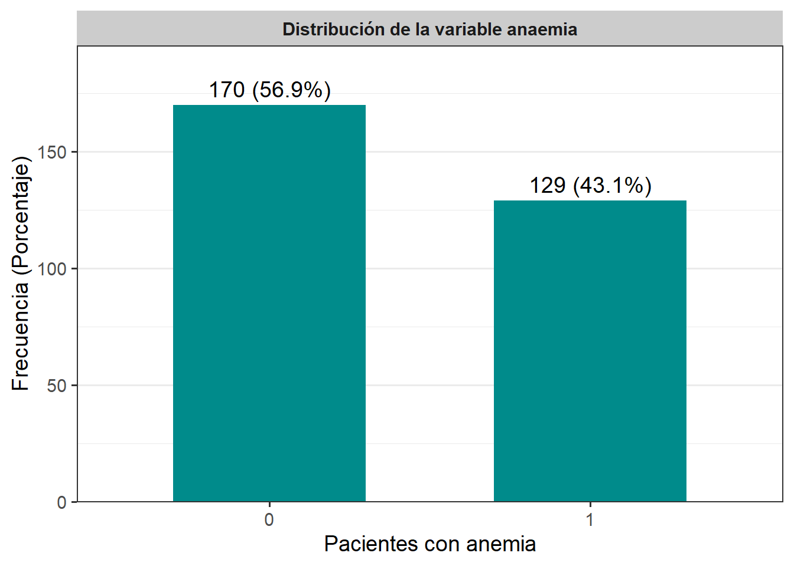

Capítulo 3 Análisis exploratorio de datos (EDA)
3.1 Contexto de los datos
Aquí se presenta una explicación de las variables pertenecientes al conjunto de datos:
age (años): Edad del paciente.
anaemia (lógica): Disminución de glóbulos rojos o hemoglobina.
creatinine_phosphokinase (µg/L): Nivel de la enzima CPK en la sangre.
diabetes (lógica): Alteración del uso de la glucosa en la sangre.
ejection_fraction (porcentaje): Porcentaje de sangre bombeada.
high_blood_pressure (lógica): Presión arterial elevada de forma persistente.
platelets: Plaquetas en sangre.
serum_creatinine (mg/dL): Nivel de creatinina en sangre.
serum_sodium (mEq/L): Nivel de sodio en sangre.
sex (Binario): Mujer u hombre.
smoking (lógica): Pacientes fumadores.
time (días): Periodo de seguimiento.
DEATH_EVENT (lógica): Pacientes muertos o vivos (
Target).
El conjunto de datos clínicos cuenta con variables numéricas y categóricas, de las cuales algunas son binarias con 0 = False y 1 = True.
3.2 Extracción, transformación y carga (ETL)
- Cargamos las librerías:
## ── Attaching core tidyverse packages ──────────────────────── tidyverse 2.0.0 ──
## ✔ dplyr 1.1.4 ✔ purrr 1.1.0
## ✔ forcats 1.0.0 ✔ stringr 1.5.1
## ✔ ggplot2 3.5.2 ✔ tibble 3.3.0
## ✔ lubridate 1.9.4 ✔ tidyr 1.3.1
## ── Conflicts ────────────────────────────────────────── tidyverse_conflicts() ──
## ✖ dplyr::filter() masks stats::filter()
## ✖ dplyr::lag() masks stats::lag()
## ℹ Use the conflicted package (<http://conflicted.r-lib.org/>) to force all conflicts to become errors## Cargando paquete requerido: Rcpp
## ##
## ## Amelia II: Multiple Imputation
## ## (Version 1.8.3, built: 2024-11-07)
## ## Copyright (C) 2005-2025 James Honaker, Gary King and Matthew Blackwell
## ## Refer to http://gking.harvard.edu/amelia/ for more information
## ####
## Adjuntando el paquete: 'gridExtra'
##
## The following object is masked from 'package:dplyr':
##
## combine- Cargamos el conjunto de datos:
## Rows: 299 Columns: 13
## ── Column specification ────────────────────────────────────────────────────────
## Delimiter: ","
## dbl (13): age, anaemia, creatinine_phosphokinase, diabetes, ejection_fractio...
##
## ℹ Use `spec()` to retrieve the full column specification for this data.
## ℹ Specify the column types or set `show_col_types = FALSE` to quiet this message.- Verificamos el encabezado de los datos, sus dimensiones, nombres de columnas y estructura del dataset:
## # A tibble: 5 × 13
## age anaemia creatinine_phosphokinase diabetes ejection_fraction
## <dbl> <dbl> <dbl> <dbl> <dbl>
## 1 75 0 582 0 20
## 2 55 0 7861 0 38
## 3 65 0 146 0 20
## 4 50 1 111 0 20
## 5 65 1 160 1 20
## # ℹ 8 more variables: high_blood_pressure <dbl>, platelets <dbl>,
## # serum_creatinine <dbl>, serum_sodium <dbl>, sex <dbl>, smoking <dbl>,
## # time <dbl>, DEATH_EVENT <dbl>## [1] 299 13## [1] "age" "anaemia"
## [3] "creatinine_phosphokinase" "diabetes"
## [5] "ejection_fraction" "high_blood_pressure"
## [7] "platelets" "serum_creatinine"
## [9] "serum_sodium" "sex"
## [11] "smoking" "time"
## [13] "DEATH_EVENT"## spc_tbl_ [299 × 13] (S3: spec_tbl_df/tbl_df/tbl/data.frame)
## $ age : num [1:299] 75 55 65 50 65 90 75 60 65 80 ...
## $ anaemia : num [1:299] 0 0 0 1 1 1 1 1 0 1 ...
## $ creatinine_phosphokinase: num [1:299] 582 7861 146 111 160 ...
## $ diabetes : num [1:299] 0 0 0 0 1 0 0 1 0 0 ...
## $ ejection_fraction : num [1:299] 20 38 20 20 20 40 15 60 65 35 ...
## $ high_blood_pressure : num [1:299] 1 0 0 0 0 1 0 0 0 1 ...
## $ platelets : num [1:299] 265000 263358 162000 210000 327000 ...
## $ serum_creatinine : num [1:299] 1.9 1.1 1.3 1.9 2.7 2.1 1.2 1.1 1.5 9.4 ...
## $ serum_sodium : num [1:299] 130 136 129 137 116 132 137 131 138 133 ...
## $ sex : num [1:299] 1 1 1 1 0 1 1 1 0 1 ...
## $ smoking : num [1:299] 0 0 1 0 0 1 0 1 0 1 ...
## $ time : num [1:299] 4 6 7 7 8 8 10 10 10 10 ...
## $ DEATH_EVENT : num [1:299] 1 1 1 1 1 1 1 1 1 1 ...
## - attr(*, "spec")=
## .. cols(
## .. age = col_double(),
## .. anaemia = col_double(),
## .. creatinine_phosphokinase = col_double(),
## .. diabetes = col_double(),
## .. ejection_fraction = col_double(),
## .. high_blood_pressure = col_double(),
## .. platelets = col_double(),
## .. serum_creatinine = col_double(),
## .. serum_sodium = col_double(),
## .. sex = col_double(),
## .. smoking = col_double(),
## .. time = col_double(),
## .. DEATH_EVENT = col_double()
## .. )
## - attr(*, "problems")=<externalptr>- Identificamos los valores
NA:
## Warning: Unknown or uninitialised column: `arguments`.
## Unknown or uninitialised column: `arguments`.## Warning: Unknown or uninitialised column: `imputations`.
Como se observa en el gráfico no se presentan datos faltantes en el dataset.
3.3 Ánálisis de la variable objetivo: DEATH_EVENT
- Resumen de la variable:
## # A tibble: 2 × 3
## DEATH_EVENT n proporcion
## <dbl> <int> <dbl>
## 1 0 203 0.679
## 2 1 96 0.321datos %>%
summarise(
total_registros = n(),
total_muertes = sum(DEATH_EVENT == 1),
total_sobrevivientes = sum(DEATH_EVENT == 0),
prop_muertes = mean(DEATH_EVENT),
prop_sobrevivientes = 1 - mean(DEATH_EVENT))## # A tibble: 1 × 5
## total_registros total_muertes total_sobrevivientes prop_muertes
## <int> <int> <int> <dbl>
## 1 299 96 203 0.321
## # ℹ 1 more variable: prop_sobrevivientes <dbl>La variable DEATH_EVENT representa la mortalidad de los pacientes, indicando si el paciente murió (1) o no (0). De un total de 299 observaciones, el 67,89% de los pacientes sobrevivieron (\(n = 203\)), mientras que el 32,1% murieron (\(n = 96\)). Esta distribución de los datos está moderadamente desbalanceada, lo que sugiere que hay más casos de no fallecimiento que de fallecimiento, pero no es un desequilibrio extremo. Sin embargo, a nivel clínico la proporción del 32% de defunciones es alta en comparación con la población general, lo que podría deberse a que los datos provienen de una población de alto riesgo.
- Diagrama de barras
tabla_smoking <- datos %>%
count(smoking, name = "Pacientes") %>%
mutate(
Porcentaje = round(Pacientes / sum(Pacientes) * 100, 1),
Etiqueta = paste0(Pacientes, " (", Porcentaje, "%)"))
tabla_smoking %>%
ggplot(aes(x = factor(smoking), y = Pacientes)) +
geom_col(fill = "#008B8B", width = 0.6) +
geom_text(aes(label = Etiqueta), vjust = -0.5, size = 3) +
facet_grid(~ "Diagrama de barras de pacientes") +
scale_y_continuous(expand = expansion(mult = c(0, 0.15))) +
labs(x = "Pacientes", y = "Numero de pacientes (Porcentaje)")- Diagrama de Pastel
datos %>%
count(DEATH_EVENT) %>%
ggplot(aes(x = "", y = n, fill = factor(DEATH_EVENT))) +
geom_col() +
coord_polar(theta = "y") +
labs(fill = "DEATH_EVENT", title = "Proporción de muertes y sobrevivientes") +
scale_fill_manual(values = c("skyblue", "tomato"),
labels = c("0" = "Sobreviviente", "1" = "Muerte"))
El gráfico de barras y de torta dan un primer vistazo claro de la distribución de la mortalidad tanto en frecuencia absoluta como proporción relativa, evidenciando un desbalance entre fallecidos y sobrevivientes donde la mayoría de los pacientes sobrevivieron. Específicamente, el 67,9% de los pacientes (203 personas) sobrevivió (0), mientras que el 32,1% (96 personas) falleció (1). Esto implica que en la muestra estudiada la tasa de mortalidad es cercana a un tercio, lo cual representa una fracción significativa de la población estudiada. Este resultado puede ser un indicador relevante para profundizar en el análisis de las variables clínicas asociadas a la mortalidad para identificar factores de riesgo.
3.4 Análisis de las variables características (independientes)
- Resumen de las variables numéricas:
datos %>%
summarise(
n = length(age),
media = mean(age),
ds = sd(age),
mediana = median(age),
minimo = min(age),
maximo = max(age),
Q1 = quantile(age, 0.25),
Q3 = quantile(age, 0.75),
IQR = IQR(age)) %>%
mutate(variable = "age") -> var_num_age
datos %>%
summarise(
n = length(creatinine_phosphokinase),
media = mean(creatinine_phosphokinase),
ds = sd(creatinine_phosphokinase),
mediana = median(creatinine_phosphokinase),
minimo = min(creatinine_phosphokinase),
maximo = max(creatinine_phosphokinase),
Q1 = quantile(creatinine_phosphokinase, 0.25),
Q3 = quantile(creatinine_phosphokinase, 0.75),
IQR = IQR(creatinine_phosphokinase)) %>%
mutate(variable = "creatinine_phosphokinase") -> var_num_cp
datos %>%
summarise(
n = length(ejection_fraction),
media = mean(ejection_fraction),
ds = sd(ejection_fraction),
mediana = median(ejection_fraction),
minimo = min(ejection_fraction),
maximo = max(ejection_fraction),
Q1 = quantile(ejection_fraction, 0.25),
Q3 = quantile(ejection_fraction, 0.75),
IQR = IQR(ejection_fraction)) %>%
mutate(variable = "ejection_fraction") -> var_num_ef
datos %>%
summarise(
n = length(platelets),
media = mean(platelets),
ds = sd(platelets),
mediana = median(platelets),
minimo = min(platelets),
maximo = max(platelets),
Q1 = quantile(platelets, 0.25),
Q3 = quantile(platelets, 0.75),
IQR = IQR(platelets)) %>%
mutate(variable = "platelets") -> var_num_p
datos %>%
summarise(
n = length(serum_creatinine),
media = mean(serum_creatinine),
ds = sd(serum_creatinine),
mediana = median(serum_creatinine),
minimo = min(serum_creatinine),
maximo = max(serum_creatinine),
Q1 = quantile(serum_creatinine, 0.25),
Q3 = quantile(serum_creatinine, 0.75),
IQR = IQR(serum_creatinine)) %>%
mutate(variable = "serum_creatinine") -> var_num_sc
datos %>%
summarise(
n = length(serum_sodium),
media = mean(serum_sodium),
ds = sd(serum_sodium),
mediana = median(serum_sodium),
minimo = min(serum_sodium),
maximo = max(serum_sodium),
Q1 = quantile(serum_sodium, 0.25),
Q3 = quantile(serum_sodium, 0.75),
IQR = IQR(serum_sodium)) %>%
mutate(variable = "serum_sodium") -> var_num_ss
datos %>%
summarise(
n = length(time),
media = mean(time),
ds = sd(time),
mediana = median(time),
minimo = min(time),
maximo = max(time),
Q1 = quantile(time, 0.25),
Q3 = quantile(time, 0.75),
IQR = IQR(time)) %>%
mutate(variable = "time") -> var_num_time
bind_rows(var_num_age, var_num_cp, var_num_ef,var_num_p,var_num_sc, var_num_ss, var_num_time) %>%
select(variable, everything())## # A tibble: 7 × 10
## variable n media ds mediana minimo maximo Q1 Q3 IQR
## <chr> <int> <dbl> <dbl> <dbl> <dbl> <dbl> <dbl> <dbl> <dbl>
## 1 age 299 6.08e1 1.19e1 6 e1 40 9.5 e1 5.1 e+1 7 e1 19
## 2 creatinine_… 299 5.82e2 9.70e2 2.5 e2 23 7.86e3 1.16e+2 5.82e2 466.
## 3 ejection_fr… 299 3.81e1 1.18e1 3.8 e1 14 8 e1 3 e+1 4.5 e1 15
## 4 platelets 299 2.63e5 9.78e4 2.62e5 25100 8.5 e5 2.12e+5 3.03e5 91000
## 5 serum_creat… 299 1.39e0 1.03e0 1.1 e0 0.5 9.4 e0 9 e-1 1.4 e0 0.5
## 6 serum_sodium 299 1.37e2 4.41e0 1.37e2 113 1.48e2 1.34e+2 1.4 e2 6
## 7 time 299 1.30e2 7.76e1 1.15e2 4 2.85e2 7.3 e+1 2.03e2 130El análisis estadístico de las variables numéricas revela características claves de los pacientes durante su seguimiento. La edad promedio es 60,8 años (DS = 11,9 años) y un rango de 40 a 95 años (Q1 = 51, Mediana = 60, Q3 = 70), lo que indica que la población está compuesta mayoritariamente por adultos de mediana edad y mayores, con dispersión moderada. La creatinina-fosfoquinasa (CPK) presenta un promedio de 581,84 µg/L (DS = 970,3 µg/L), con un rango de 23 a 7861 y una mediana de 250 µg/L, lo cual indica una alta dispersión en los datos, discrepancia entre la media y la mediana, y la presencia de valores extremos que sesgan la distribución, señalando una asimetría positiva. La fracción de eyección posee una media de 38,1% (DS = 11,8%), mediana 38% y rango 14-80%, con un 75% de las observaciones por debajo de 45% FE, lo que sugiere que una gran parte de los pacientes presenta FE baja (≤40%) indicando disfunción sistólica significativa, que es clínicamente relevante y se asocia a un peor pronóstico. En las plaquetas, se observa una media de 263358 plaquetas en sangre (DS = 97804), mediana igual a 262000 plaquetas y rango 25100-850000, indicando también variabilidad considerable y algunos valores extremos. La creatinina sérica presenta media 1,4 mg/dL (DS = 1,03 mg/dL), mediana 1,1 mg/dL y rango 0,5-9,4 mg/dL, esto sugiere que la mayoría de los pacientes tiene valores normales de creatinina sérica, sin embargo, hay algunos valores extremos que representan un subgrupo con insuficiencia renal significativa que puede influir en la mortalidad. En el sodio sérico se observa una media de 136,6 mEq/L (DS = 4,4 mEq/L), mediana de 137 mEq/L y rango 113-148 mEq/L , presenta poca variabilidad y datos clínicamente normales. El tiempo de seguimiento presenta media 130 días (DS = 77,6 días), mediana de 115 días y rango 4-285 días, reflejando heterogeneidad en el periodo de observación de los pacientes.
- Gráficos
p1 <- datos %>%
ggplot(aes(x = "", y = age)) +
geom_boxplot(fill = "#1f77b4", alpha = 0.7) +
stat_summary(fun = mean, geom = "point", shape = 18, size = 4, color = "black") +
labs(
title = "Distribución de la edad",
y = "Años",
x = ""
) +
theme_bw()
p2 <- datos %>%
ggplot(aes(x = "", y = creatinine_phosphokinase)) +
geom_boxplot(fill = "#2f43b1", alpha = 0.7) +
stat_summary(fun = mean, geom = "point", shape = 18, size = 4, color = "black") +
labs(
title = "Distribución del nivel de CPK",
y = "µg/L",
x = ""
) +
theme_bw()
p3 <- datos %>%
ggplot(aes(x = "", y = ejection_fraction)) +
geom_boxplot(fill = "#2ca02c", alpha = 0.7) +
stat_summary(fun = mean, geom = "point", shape = 18, size = 4, color = "black") +
labs(
title = "Distribución del porcentaje de FE",
y = "%",
x = ""
) +
theme_bw()
p4 <-datos %>%
ggplot(aes(x = "", y = platelets)) +
geom_boxplot(fill = "#ff7f0e", alpha = 0.7) +
stat_summary(fun = mean, geom = "point", shape = 18, size = 4, color = "black") +
labs(
title = "Distribución del número de plaquetas",
y = "",
x = ""
) +
theme_bw()
p5 <-datos %>%
ggplot(aes(x = "", y = serum_creatinine)) +
geom_boxplot(fill = "#9467bd", alpha = 0.7) +
stat_summary(fun = mean, geom = "point", shape = 18, size = 4, color = "black") +
labs(
title = "Distribución del nivel de creatinina",
y = "mg/dL",
x = ""
) +
theme_bw()
p6 <-datos %>%
ggplot(aes(x = "", y = serum_sodium)) +
geom_boxplot(fill = "#ff7f0e", alpha = 0.7) +
stat_summary(fun = mean, geom = "point", shape = 18, size = 4, color = "black") +
labs(
title = "Distribución del nivel de sodio",
y = "mEq/L",
x = ""
) +
theme_bw()
p7 <-datos %>%
ggplot(aes(x = "", y = time)) +
geom_boxplot(fill = "#ff7f0e", alpha = 0.7) +
stat_summary(fun = mean, geom = "point", shape = 18, size = 4, color = "black") +
labs(
title = "Distribución del tiempo de seguimiento",
y = "Days",
x = ""
) +
theme_bw()
grid.arrange(p1, p2, p3, p4, ncol = 2)

- Variables categóricas
tabla_anaemia <- datos %>%
count(anaemia, name = "Frecuencia") %>%
mutate(Porcentaje = round(Frecuencia / sum(Frecuencia) * 100, 2),
Variable = "Anaemia",
Categoria = anaemia) %>%
select(Variable, Categoria, Frecuencia, Porcentaje)
tabla_diabetes <- datos %>%
count(diabetes, name = "Frecuencia") %>%
mutate(Porcentaje = round(Frecuencia / sum(Frecuencia) * 100, 2),
Variable = "Diabetes",
Categoria = diabetes) %>%
select(Variable, Categoria, Frecuencia, Porcentaje)
tabla_hbp <- datos %>%
count(high_blood_pressure, name = "Frecuencia") %>%
mutate(Porcentaje = round(Frecuencia / sum(Frecuencia) * 100, 2),
Variable = "Presión alta",
Categoria = high_blood_pressure) %>%
select(Variable, Categoria, Frecuencia, Porcentaje)
tabla_sex <- datos %>%
count(sex, name = "Frecuencia") %>%
mutate(Porcentaje = round(Frecuencia / sum(Frecuencia) * 100, 2),
Variable = "Sexo",
Categoria = sex) %>%
select(Variable, Categoria, Frecuencia, Porcentaje)
tabla_smoking <- datos %>%
count(smoking, name = "Frecuencia") %>%
mutate(Porcentaje = round(Frecuencia / sum(Frecuencia) * 100, 2),
Variable = "Smoking",
Categoria = smoking) %>%
select(Variable, Categoria, Frecuencia, Porcentaje)
bind_rows(tabla_anaemia, tabla_diabetes, tabla_hbp,tabla_sex,
tabla_smoking)## # A tibble: 10 × 4
## Variable Categoria Frecuencia Porcentaje
## <chr> <dbl> <int> <dbl>
## 1 Anaemia 0 170 56.9
## 2 Anaemia 1 129 43.1
## 3 Diabetes 0 174 58.2
## 4 Diabetes 1 125 41.8
## 5 Presión alta 0 194 64.9
## 6 Presión alta 1 105 35.1
## 7 Sexo 0 105 35.1
## 8 Sexo 1 194 64.9
## 9 Smoking 0 203 67.9
## 10 Smoking 1 96 32.1- Gráficos
tabla__anaemia <- datos %>%
count(anaemia, name = "Frecuencia") %>%
mutate(Porcentaje = round(Frecuencia / sum(Frecuencia) * 100, 1),
Etiqueta = paste0(Frecuencia, " (", Porcentaje, "%)"))
tabla__anaemia %>%
ggplot(aes(x = anaemia, y = Frecuencia)) +
geom_col(fill = "#008B8B", width = 0.6) +
geom_text(aes(label = Etiqueta), vjust = -0.5, size = 5) +
facet_wrap(~ "Distribución de la variable anaemia") +
scale_y_continuous(expand = expansion(mult = c(0, 0.15))) +
labs(x = "Pacientes con anemia",
y = "Frecuencia (Porcentaje)") +
theme_bw(base_size = 14) +
theme(
plot.title = element_blank(),
strip.background = element_rect(fill = "gray80", color = NA),
strip.text = element_text(face = "bold"),
panel.grid.major.x = element_blank())
tabla__diabetes <- datos %>%
count(diabetes, name = "Frecuencia") %>%
mutate(Porcentaje = round(Frecuencia / sum(Frecuencia) * 100, 1),
Etiqueta = paste0(Frecuencia, " (", Porcentaje, "%)"))
tabla__diabetes %>%
ggplot(aes(x = diabetes, y = Frecuencia)) +
geom_col(fill = "#008B8B", width = 0.6) +
geom_text(aes(label = Etiqueta), vjust = -0.5, size = 5) +
facet_wrap(~ "Distribución de la variable diabetes") +
scale_y_continuous(expand = expansion(mult = c(0, 0.15))) +
labs(x = "Pacientes con diabetes",
y = "Frecuencia (Porcentaje)") +
theme_bw(base_size = 14) +
theme(
plot.title = element_blank(),
strip.background = element_rect(fill = "gray80", color = NA),
strip.text = element_text(face = "bold"),
panel.grid.major.x = element_blank())tabla__hbp <- datos %>%
count(high_blood_pressure, name = "Frecuencia") %>%
mutate(Porcentaje = round(Frecuencia / sum(Frecuencia) * 100, 1),
Etiqueta = paste0(Frecuencia, " (", Porcentaje, "%)"))
tabla__hbp %>%
ggplot(aes(x = high_blood_pressure, y = Frecuencia)) +
geom_col(fill = "#008B8B", width = 0.6) +
geom_text(aes(label = Etiqueta), vjust = -0.5, size = 5) +
facet_wrap(~ "Distribución de la variable presión") +
scale_y_continuous(expand = expansion(mult = c(0, 0.15))) +
labs(x = "Pacientes con presión alta",
y = "Frecuencia (Porcentaje)") +
theme_bw(base_size = 14) +
theme(
plot.title = element_blank(),
strip.background = element_rect(fill = "gray80", color = NA),
strip.text = element_text(face = "bold"),
panel.grid.major.x = element_blank())
tabla__sexo <- datos %>%
count(sex, name = "Frecuencia") %>%
mutate(Porcentaje = round(Frecuencia / sum(Frecuencia) * 100, 1),
Etiqueta = paste0(Frecuencia, " (", Porcentaje, "%)"))
tabla__sexo %>%
ggplot(aes(x = sex, y = Frecuencia)) +
geom_col(fill = "#008B8B", width = 0.6) +
geom_text(aes(label = Etiqueta), vjust = -0.5, size = 5) +
facet_wrap(~ "Distribución de la variable sexo") +
scale_y_continuous(expand = expansion(mult = c(0, 0.15))) +
labs(x = "Sexo de pacientes",
y = "Frecuencia (Porcentaje)") +
theme_bw(base_size = 14) +
theme(
plot.title = element_blank(),
strip.background = element_rect(fill = "gray80", color = NA),
strip.text = element_text(face = "bold"),
panel.grid.major.x = element_blank())tabla__smoking <- datos %>%
count(smoking, name = "Frecuencia") %>%
mutate(Porcentaje = round(Frecuencia / sum(Frecuencia) * 100, 1),
Etiqueta = paste0(Frecuencia, " (", Porcentaje, "%)"))
tabla__smoking %>%
ggplot(aes(x = smoking, y = Frecuencia)) +
geom_col(fill = "#008B8B", width = 0.6) +
geom_text(aes(label = Etiqueta), vjust = -0.5, size = 5) +
facet_wrap(~ "Distribución de la variable smoking") +
scale_y_continuous(expand = expansion(mult = c(0, 0.15))) +
labs(x = "Pacientes fumadores",
y = "Frecuencia (Porcentaje)") +
theme_bw(base_size = 14) +
theme(
plot.title = element_blank(),
strip.background = element_rect(fill = "gray80", color = NA),
strip.text = element_text(face = "bold"),
panel.grid.major.x = element_blank())
3.5 Análisis exploratorio bivariado
Compararemos la variable DEATH_EVENT con las variables numéricas independientes:
# Diagrama caja y bigotes: DEATH_EVENT / Edad
ggplot(datos, aes(x = factor(DEATH_EVENT), y = age)) +
geom_boxplot(fill = "orange", alpha = 0.7) +
labs(
x = "Muerte (1 = sí, 0 = no)",
y = "Edad",
title = "Distribución de edad según muerte") +
theme_bw() +
theme(
plot.title = element_text(hjust = 0.5),
strip.background = element_rect(fill = "gray90", color = NA),
strip.text = element_text(face = "bold"))
# Diagrama caja y bigotes: DEATH_EVENT / creatinine_phosphokinase
ggplot(datos, aes(x = factor(DEATH_EVENT), y = creatinine_phosphokinase)) +
geom_boxplot(fill = "orange", alpha = 0.7) +
labs(
x = "Muerte (1 = sí, 0 = no)",
y = "µg/L",
title = "Distribución de nivel de CPK según muerte") +
theme_bw() +
theme(
plot.title = element_text(hjust = 0.5),
strip.background = element_rect(fill = "gray90", color = NA),
strip.text = element_text(face = "bold"))
# Diagrama caja y bigotes: DEATH_EVENT / Ejection_fraction
ggplot(datos, aes(x = factor(DEATH_EVENT), y = ejection_fraction)) +
geom_boxplot(fill = "orange", alpha = 0.7) +
labs(
x = "Muerte (1 = sí, 0 = no)",
y = "%",
title = "Distribución del porcentaje de FE según muerte") +
theme_bw() +
theme(
plot.title = element_text(hjust = 0.5),
strip.background = element_rect(fill = "gray90", color = NA),
strip.text = element_text(face = "bold"))# Diagrama caja y bigotes: DEATH_EVENT / platelets
ggplot(datos, aes(x = factor(DEATH_EVENT), y = platelets)) +
geom_boxplot(fill = "orange", alpha = 0.7) +
labs(
x = "Muerte (1 = sí, 0 = no)",
y = "",
title = "Distribución de plaquetas según muerte") +
theme_bw() +
theme(
plot.title = element_text(hjust = 0.5),
strip.background = element_rect(fill = "gray90", color = NA),
strip.text = element_text(face = "bold"))
# Diagrama caja y bigotes: DEATH_EVENT / serum_creatinine
ggplot(datos, aes(x = factor(DEATH_EVENT), y = serum_creatinine)) +
geom_boxplot(fill = "orange", alpha = 0.7) +
labs(
x = "Muerte (1 = sí, 0 = no)",
y = "mg/dL",
title = "Distribución del nivel de creatinina según muerte") +
theme_bw() +
theme(
plot.title = element_text(hjust = 0.5),
strip.background = element_rect(fill = "gray90", color = NA),
strip.text = element_text(face = "bold"))
# Diagrama caja y bigotes: DEATH_EVENT / serum_sodium
ggplot(datos, aes(x = factor(DEATH_EVENT), y = serum_sodium)) +
geom_boxplot(fill = "orange", alpha = 0.7) +
labs(
x = "Muerte (1 = sí, 0 = no)",
y = "mEq/L",
title = "Distribución del nivel de sodio según muerte") +
theme_bw() +
theme(
plot.title = element_text(hjust = 0.5),
strip.background = element_rect(fill = "gray90", color = NA),
strip.text = element_text(face = "bold"))
# Diagrama caja y bigotes: DEATH_EVENT / time
ggplot(datos, aes(x = factor(DEATH_EVENT), y = time)) +
geom_boxplot(fill = "orange", alpha = 0.7) +
labs(
x = "Muerte (1 = sí, 0 = no)",
y = "Days",
title = "Distribución del tiempo de seguimiento según muerte") +
theme_bw() +
theme(
plot.title = element_text(hjust = 0.5),
strip.background = element_rect(fill = "gray90", color = NA),
strip.text = element_text(face = "bold"))- Comparación de las variables numéricas independientes con respecto a la variable
DEATH_EVENT
age_y <- datos %>%
group_by(DEATH_EVENT) %>%
summarise(n = length(age),
media = mean(age),
ds = sd(age),
mediana = median(age),
minimo = min(age),
maximo = max(age),
Q1 = quantile(age, 0.25),
Q3 = quantile(age, 0.75),
IQR = IQR(age)) %>%
mutate(variable = "age", niveles = as.character(DEATH_EVENT)) %>%
select(variable, niveles, everything(), -DEATH_EVENT)
cp_y <- datos %>%
group_by(DEATH_EVENT) %>%
summarise(n = length(creatinine_phosphokinase),
media = mean(creatinine_phosphokinase),
ds = sd(creatinine_phosphokinase),
mediana = median(creatinine_phosphokinase),
minimo = min(creatinine_phosphokinase),
maximo = max(creatinine_phosphokinase),
Q1 = quantile(creatinine_phosphokinase, 0.25),
Q3 = quantile(creatinine_phosphokinase, 0.75),
IQR = IQR(creatinine_phosphokinase)) %>%
mutate(variable = "creatinine_phosphokinase", niveles = as.character(DEATH_EVENT)) %>%
select(variable, niveles, everything(), -DEATH_EVENT)
ef_y <- datos %>%
group_by(DEATH_EVENT) %>%
summarise(n = length(ejection_fraction),
media = mean(ejection_fraction),
ds = sd(ejection_fraction),
mediana = median(ejection_fraction),
minimo = min(ejection_fraction),
maximo = max(ejection_fraction),
Q1 = quantile(ejection_fraction, 0.25),
Q3 = quantile(ejection_fraction, 0.75),
IQR = IQR(ejection_fraction)) %>%
mutate(variable = "ejection_fraction", niveles = as.character(DEATH_EVENT)) %>%
select(variable, niveles, everything(), -DEATH_EVENT)
platelets_y <- datos %>%
group_by(DEATH_EVENT) %>%
summarise(n = length(platelets),
media = mean(platelets),
ds = sd(platelets),
mediana = median(platelets),
minimo = min(platelets),
maximo = max(platelets),
Q1 = quantile(platelets, 0.25),
Q3 = quantile(platelets, 0.75),
IQR = IQR(platelets)) %>%
mutate(variable = "platelets", niveles = as.character(DEATH_EVENT)) %>%
select(variable, niveles, everything(), -DEATH_EVENT)
sc_y <- datos %>%
group_by(DEATH_EVENT) %>%
summarise(n = length(serum_creatinine),
media = mean(serum_creatinine),
ds = sd(serum_creatinine),
mediana = median(serum_creatinine),
minimo = min(serum_creatinine),
maximo = max(serum_creatinine),
Q1 = quantile(serum_creatinine, 0.25),
Q3 = quantile(serum_creatinine, 0.75),
IQR = IQR(serum_creatinine)) %>%
mutate(variable = "serum_creatinine", niveles = as.character(DEATH_EVENT)) %>%
select(variable, niveles, everything(), -DEATH_EVENT)
ss_y <- datos %>%
group_by(DEATH_EVENT) %>%
summarise(n = length(serum_sodium),
media = mean(serum_sodium),
ds = sd(serum_sodium),
mediana = median(serum_sodium),
minimo = min(serum_sodium),
maximo = max(serum_sodium),
Q1 = quantile(serum_sodium, 0.25),
Q3 = quantile(serum_sodium, 0.75),
IQR = IQR(serum_sodium)) %>%
mutate(variable = "serum_sodium", niveles = as.character(DEATH_EVENT)) %>%
select(variable, niveles, everything(), -DEATH_EVENT)
time_y <- datos %>%
group_by(DEATH_EVENT) %>%
summarise(n = length(time),
media = mean(time),
ds = sd(time),
mediana = median(time),
minimo = min(time),
maximo = max(time),
Q1 = quantile(time, 0.25),
Q3 = quantile(time, 0.75),
IQR = IQR(time)) %>%
mutate(variable = "time", niveles = as.character(DEATH_EVENT)) %>%
select(variable, niveles, everything(), -DEATH_EVENT)
bind_rows(age_y, cp_y, ef_y, platelets_y, sc_y, ss_y, time_y)## # A tibble: 14 × 11
## variable niveles n media ds mediana minimo maximo Q1 Q3
## <chr> <chr> <int> <dbl> <dbl> <dbl> <dbl> <dbl> <dbl> <dbl>
## 1 age 0 203 5.88e1 1.06e+1 6 e1 40 9 e1 5 e+1 6.5 e1
## 2 age 1 96 6.52e1 1.32e+1 6.5 e1 42 9.5 e1 5.5 e+1 7.5 e1
## 3 creatinin… 0 203 5.40e2 7.54e+2 2.45e2 30 5.21e3 1.09e+2 5.82e2
## 4 creatinin… 1 96 6.70e2 1.32e+3 2.59e2 23 7.86e3 1.29e+2 5.82e2
## 5 ejection_… 0 203 4.03e1 1.09e+1 3.8 e1 17 8 e1 3.5 e+1 4.5 e1
## 6 ejection_… 1 96 3.35e1 1.25e+1 3 e1 14 7 e1 2.5 e+1 3.8 e1
## 7 platelets 0 203 2.67e5 9.75e+4 2.63e5 25100 8.5 e5 2.20e+5 3.02e5
## 8 platelets 1 96 2.56e5 9.85e+4 2.58e5 47000 6.21e5 1.98e+5 3.11e5
## 9 serum_cre… 0 203 1.18e0 6.54e-1 1 e0 0.5 6.1 e0 9 e-1 1.2 e0
## 10 serum_cre… 1 96 1.84e0 1.47e+0 1.3 e0 0.6 9.4 e0 1.08e+0 1.9 e0
## 11 serum_sod… 0 203 1.37e2 3.98e+0 1.37e2 113 1.48e2 1.36e+2 1.4 e2
## 12 serum_sod… 1 96 1.35e2 5.00e+0 1.36e2 116 1.46e2 1.33e+2 1.38e2
## 13 time 0 203 1.58e2 6.77e+1 1.72e2 12 2.85e2 9.5 e+1 2.13e2
## 14 time 1 96 7.09e1 6.24e+1 4.45e1 4 2.41e2 2.55e+1 1.02e2
## # ℹ 1 more variable: IQR <dbl>- Comparación de las variables categóricas independientes con respecto a la variable
DEATH_EVENT
datos %>%
group_by(DEATH_EVENT) %>%
count(anaemia, name = "n") %>%
mutate(categoria = anaemia,
variable = "Anemia",
porcentaje = (n / sum(n)) * 100) %>%
select(DEATH_EVENT, variable, categoria, n, porcentaje)## # A tibble: 4 × 5
## # Groups: DEATH_EVENT [2]
## DEATH_EVENT variable categoria n porcentaje
## <dbl> <chr> <dbl> <int> <dbl>
## 1 0 Anemia 0 120 59.1
## 2 0 Anemia 1 83 40.9
## 3 1 Anemia 0 50 52.1
## 4 1 Anemia 1 46 47.9datos %>%
group_by(DEATH_EVENT) %>%
count(diabetes, name = "n") %>%
mutate(categoria = diabetes,
variable = "Diabetes",
porcentaje = (n / sum(n)) * 100) %>%
select(DEATH_EVENT, variable, categoria, n, porcentaje)## # A tibble: 4 × 5
## # Groups: DEATH_EVENT [2]
## DEATH_EVENT variable categoria n porcentaje
## <dbl> <chr> <dbl> <int> <dbl>
## 1 0 Diabetes 0 118 58.1
## 2 0 Diabetes 1 85 41.9
## 3 1 Diabetes 0 56 58.3
## 4 1 Diabetes 1 40 41.7datos %>%
group_by(DEATH_EVENT) %>%
count(high_blood_pressure, name = "n") %>%
mutate(categoria = high_blood_pressure,
variable = "Presión alta",
porcentaje = (n / sum(n)) * 100) %>%
select(DEATH_EVENT, variable, categoria, n, porcentaje)## # A tibble: 4 × 5
## # Groups: DEATH_EVENT [2]
## DEATH_EVENT variable categoria n porcentaje
## <dbl> <chr> <dbl> <int> <dbl>
## 1 0 Presión alta 0 137 67.5
## 2 0 Presión alta 1 66 32.5
## 3 1 Presión alta 0 57 59.4
## 4 1 Presión alta 1 39 40.6datos %>%
group_by(DEATH_EVENT) %>%
count(sex, name = "n") %>%
mutate(categoria = sex,
variable = "Sexo",
porcentaje = (n / sum(n)) * 100) %>%
select(DEATH_EVENT, variable, categoria, n, porcentaje)## # A tibble: 4 × 5
## # Groups: DEATH_EVENT [2]
## DEATH_EVENT variable categoria n porcentaje
## <dbl> <chr> <dbl> <int> <dbl>
## 1 0 Sexo 0 71 35.0
## 2 0 Sexo 1 132 65.0
## 3 1 Sexo 0 34 35.4
## 4 1 Sexo 1 62 64.6datos %>%
group_by(DEATH_EVENT) %>%
count(smoking, name = "n") %>%
mutate(categoria = smoking,
variable = "Smoking",
porcentaje = (n / sum(n)) * 100) %>%
select(DEATH_EVENT, variable, categoria, n, porcentaje)## # A tibble: 4 × 5
## # Groups: DEATH_EVENT [2]
## DEATH_EVENT variable categoria n porcentaje
## <dbl> <chr> <dbl> <int> <dbl>
## 1 0 Smoking 0 137 67.5
## 2 0 Smoking 1 66 32.5
## 3 1 Smoking 0 66 68.8
## 4 1 Smoking 1 30 31.2- Gráficas: barras agrupadas
datos_plot_anemia <- datos %>%
group_by(DEATH_EVENT) %>%
count(anaemia, name = "n") %>%
mutate(categoria = anaemia,
variable = "anaemia",
porcentaje = (n / sum(n)) * 100) %>%
select(DEATH_EVENT, categoria, n, porcentaje)
datos_plot_anemia %>%
mutate(DEATH_EVENT = factor(DEATH_EVENT,
levels = c(0, 1),
labels = c("No murió", "Murió"))) %>%
ggplot(aes(x = categoria, y = n, fill = DEATH_EVENT)) +
geom_bar(stat = "identity", position = position_dodge(width = 0.9)) +
geom_text(aes(label = paste0(n, " (", round(porcentaje, 1), "%)")),
position = position_dodge(width = 0.9),
vjust = -0.3,
size = 3) +
labs(title = "Pacientes con anemia",
x = "Anemia",
y = "Cantidad de pacientes"
) +
theme_bw() +
scale_fill_brewer(palette = "Set1")
datos_plot_diabetes <- datos %>%
group_by(DEATH_EVENT) %>%
count(diabetes, name = "n") %>%
mutate(categoria = diabetes,
variable = "diabetes",
porcentaje = (n / sum(n)) * 100) %>%
select(DEATH_EVENT, categoria, n, porcentaje)
datos_plot_diabetes %>%
mutate(DEATH_EVENT = factor(DEATH_EVENT,
levels = c(0, 1),
labels = c("No murió", "Murió"))) %>%
ggplot(aes(x = categoria, y = n, fill = DEATH_EVENT)) +
geom_bar(stat = "identity", position = position_dodge(width = 0.9)) +
geom_text(aes(label = paste0(n, " (", round(porcentaje, 1), "%)")),
position = position_dodge(width = 0.9),
vjust = -0.3,
size = 3) +
labs(title = "Pacientes con diabetes",
x = "Diabetes",
y = "Cantidad de pacientes"
) +
theme_bw() +
scale_fill_brewer(palette = "Set1")
datos_plot_hbp <- datos %>%
group_by(DEATH_EVENT) %>%
count(high_blood_pressure, name = "n") %>%
mutate(categoria = high_blood_pressure,
variable = "high_blood_pressure",
porcentaje = (n / sum(n)) * 100) %>%
select(DEATH_EVENT, categoria, n, porcentaje)
datos_plot_hbp %>%
mutate(DEATH_EVENT = factor(DEATH_EVENT,
levels = c(0, 1),
labels = c("No murió", "Murió"))) %>%
ggplot(aes(x = categoria, y = n, fill = DEATH_EVENT)) +
geom_bar(stat = "identity", position = position_dodge(width = 0.9)) +
geom_text(aes(label = paste0(n, " (", round(porcentaje, 1), "%)")),
position = position_dodge(width = 0.9),
vjust = -0.3,
size = 3) +
labs(title = "Pacientes con presión alta",
x = "Presión alta",
y = "Cantidad de pacientes"
) +
theme_bw() +
scale_fill_brewer(palette = "Set1")datos_plot_sex <- datos %>%
group_by(DEATH_EVENT) %>%
count(sex, name = "n") %>%
mutate(categoria = sex,
variable = "sex",
porcentaje = (n / sum(n)) * 100) %>%
select(DEATH_EVENT, categoria, n, porcentaje)
datos_plot_hbp %>%
mutate(DEATH_EVENT = factor(DEATH_EVENT,
levels = c(0, 1),
labels = c("No murió", "Murió"))) %>%
ggplot(aes(x = categoria, y = n, fill = DEATH_EVENT)) +
geom_bar(stat = "identity", position = position_dodge(width = 0.9)) +
geom_text(aes(label = paste0(n, " (", round(porcentaje, 1), "%)")),
position = position_dodge(width = 0.9),
vjust = -0.3,
size = 3) +
labs(title = "Sexo de pacientes",
x = "Sexo",
y = "Cantidad de pacientes"
) +
theme_bw() +
scale_fill_brewer(palette = "Set1")datos_plot_smoking <- datos %>%
group_by(DEATH_EVENT) %>%
count(smoking, name = "n") %>%
mutate(categoria = smoking,
variable = "smoking",
porcentaje = (n / sum(n)) * 100) %>%
select(DEATH_EVENT, categoria, n, porcentaje)
datos_plot_smoking %>%
mutate(DEATH_EVENT = factor(DEATH_EVENT,
levels = c(0, 1),
labels = c("No murió", "Murió"))) %>%
ggplot(aes(x = categoria, y = n, fill = DEATH_EVENT)) +
geom_bar(stat = "identity", position = position_dodge(width = 0.9)) +
geom_text(aes(label = paste0(n, " (", round(porcentaje, 1), "%)")),
position = position_dodge(width = 0.9),
vjust = -0.3,
size = 3) +
labs(title = "Pacientes fumadores",
x = "Smoking",
y = "Cantidad de pacientes"
) +
theme_bw() +
scale_fill_brewer(palette = "Set1")